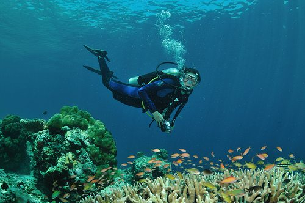

Sipadan is the only oceanic island in Malaysia, rising 600 metres from the seabed. It is located in the Celebes Sea off the east coast of Sabah, Malaysia. It was formed by living corals growing on top of an extinct volcanic cone that took thousands of years to develop. Sipadan is located at the heart of the Indo-Pacific basin, the centre of one of the richest marine habitats in the world. More than 400 species of fish and hundreds of coral species have been classified in this ecosystem. Sipadan Island was at the top of Rodale's Scuba Diving Magazine Gold List for 'The Top Dive Destination in the World'. In fact it shared its top spot with 2 other destinations known for the diversity of their marine life the Galápagos Islands and Truk in Micronesia.Frequently seen in the waters around Sipadan green and hawksbill turtles which mate and nest there, enormous schools of barracuda in tornado-like formations as well as large schools of big-eye trevally, and bumphead parrotfish. Pelagic species such as manta rays, eagle rays, scalloped hammerhead sharks and whale sharks also visit Sipadan. A turtle tomb lies underneath the column of the island, formed by an underwater limestone cave with a labyrinth of tunnels and chambers that contain many skeletal remains of turtles that become lost and drown before finding the surface.Visiting Sipadan Island requires a permit issued by Sabah Parks, a Sabah Government agency
Scuba Diving one of the most thrilling things that you must not miss when on Sipadan Island is scuba diving. Sipadan is an ideal destination for a great scuba diving experience and it earns the fame of being one of the highest-ranking scuba diving spot in the world. As you enjoy scuba diving experience, you will come across a great number of species of amazing fishes and marine life under the water. Discover the rich reef life as you go under the enchanting waters. You can find hard and soft coral that is eye-catching. You may be lucky to find Jackfish, Eagle Rays, Sea Turtles, Leopard Sharks, and many other incredible species of marine life. If you are lucky, you may also get to see whale sharks from a safe distance.